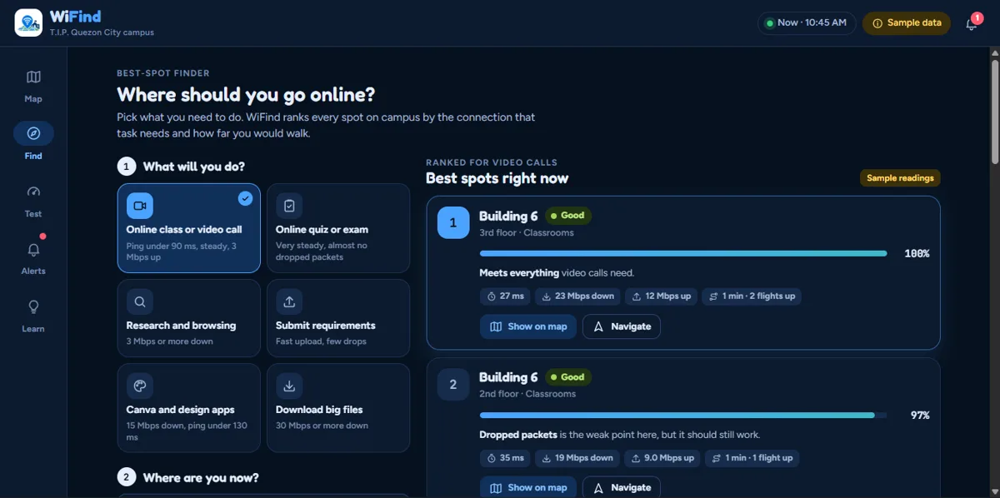
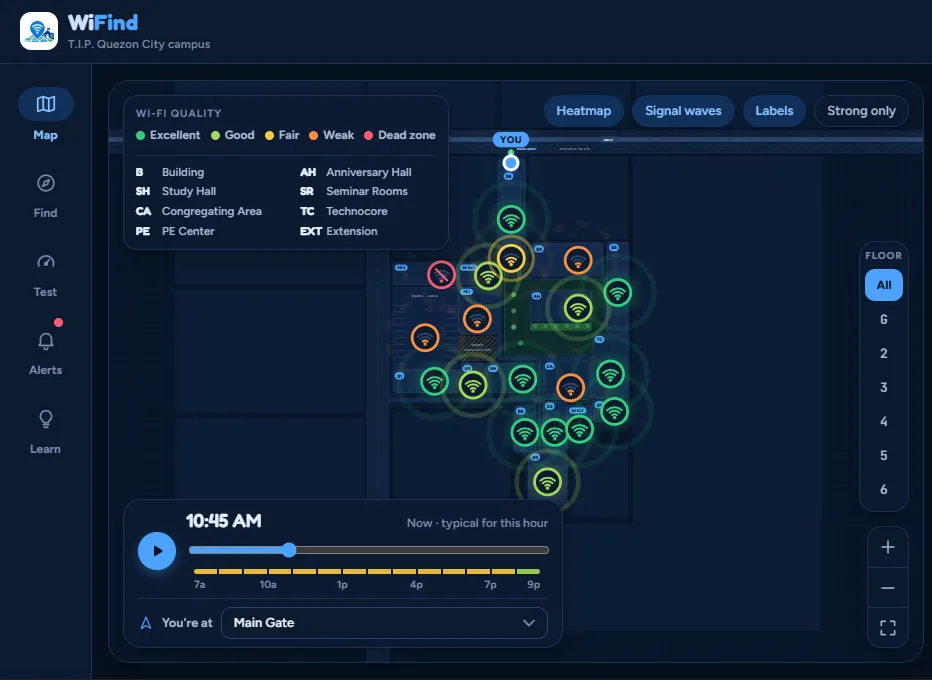
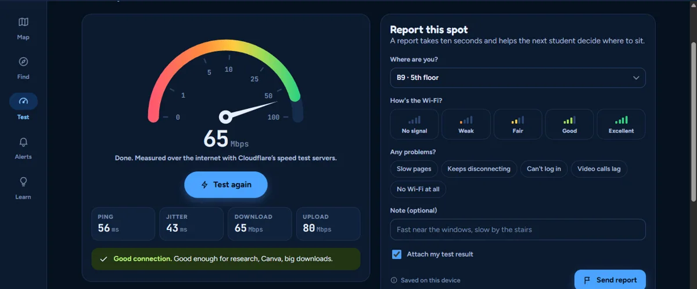
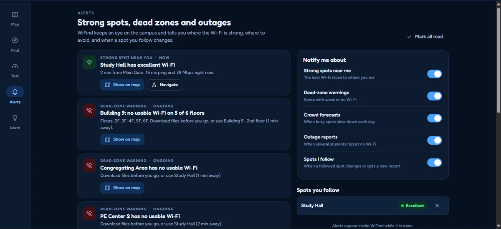
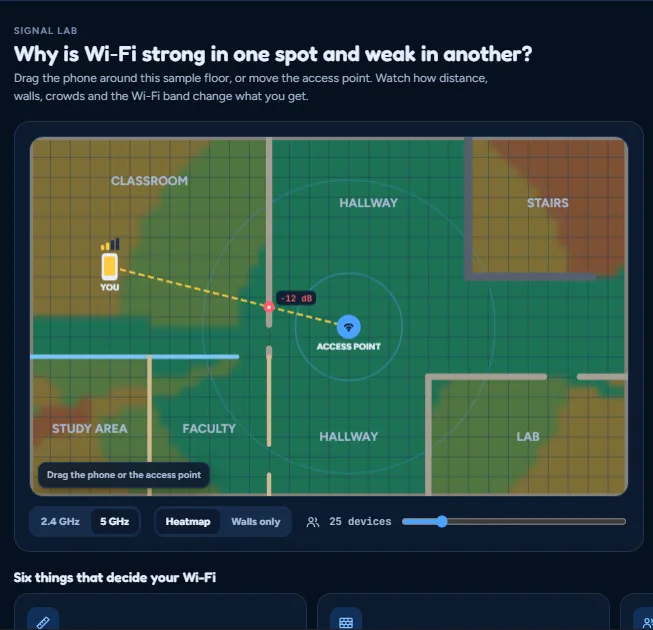

Find
The best spot for what you need
Pick your task, like a video call, an online exam, Canva or submitting requirements. WiFind ranks the spots that can handle it, with the walking time from where you are.
WiFind shows the Wi‑Fi strength on every floor of every campus building, so you know where to go before your exam, class or upload, not after it fails.
Free for students · Works on phones and laptops · No sign-up

students we surveyed face slow, unstable or high-ping Wi‑Fi often or always.
have had to move somewhere else because the Wi‑Fi was too weak.
can say for sure which areas have reliable Wi‑Fi.
Scan the QR code or go to wifind.onrender.com on your phone or laptop.
Every building and floor is rated from Excellent to Dead zone, hour by hour.
Head to the best spot, test your speed, and report it so other students know too.

Pick your task, like a video call, an online exam, Canva or submitting requirements. WiFind ranks the spots that can handle it, with the walking time from where you are.

Measure ping, jitter, download and upload, then report your spot. Your real reading replaces the estimate on the map, so it gets more accurate with every student.

Get warned about weak areas and outages, with a strong spot nearby suggested instead.
The Android app reads your actual signal strength, the network band and the access point you're on, and it recognizes which building and floor you're in.

Drag a phone around a floor plan and see how distance, walls and crowds change the signal.
| Feature | Speed test apps | Wi‑Fi map apps | Facebook posts | WiFind |
|---|---|---|---|---|
| Tests your connection | ✓ | ✓ | ✗ | ✓ |
| Map of the T.I.P. QC campus | ✗ | ✗ | ✗ | ✓ |
| Floor-by-floor detail | ✗ | ✗ | ✗ | ✓ |
| Best spot for your task | ✗ | ✗ | ✗ | ✓ |
| Dead-zone and outage alerts | ✗ | ✗ | ✗ | ✓ |
Every speed test and report shows where the campus network is weak, so IT knows exactly where new access points will help most.
Open WiFind before your next class and go straight to a spot that works.